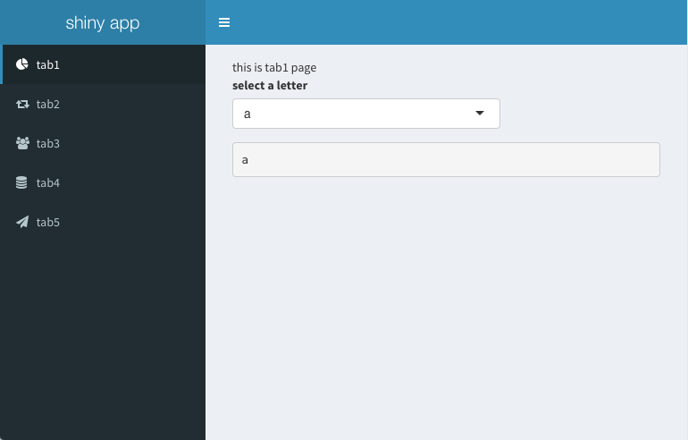

An Shiny App Design Pettern
一个最简单的ShinyApp由两个文件构成，分别是ui.R与server.R
# ui.R
library(shiny)
shinyUI(fluidPage(
titlePanel("Simplest Shiny App"),
sidebarLayout(
sidebarPanel(
sliderInput("bins",
"Number of bins:",
min = 1,
max = 50,
value = 30)
),
mainPanel(
plotOutput("distPlot")
)
)
))
# server.R
library(shiny)
shinyServer(function(input, output) {
output$distPlot <- renderPlot({
x <- faithful[, 2]
bins <- seq(min(x), max(x), length.out = input$bins + 1)
hist(x, breaks = bins, col = 'darkgray', border = 'white')
})
})
但随着页面，功能的增加，这两个页面就会越来越大，越来越不容易管理。比如一个典型的shinydashboard应用:

随着tabs、控件数量的增加，ui.R与server.R的代码量急剧增多，并且不可避免的会遇到控件id冲突的问题，比较理想的是，每个tab都分别建一个.R文件，并且使用各自独立的命名空间，可以尝试使用如下的结构来组织代码:
# ui.R
library(shiny)
library(shinydashboard)
header <- dashboardHeader(
title = "shiny app"
)
sidebar <- dashboardSidebar(
sidebarMenu(
menuItem("tab1", tabName = "tab1", icon = icon("pie-chart")),
menuItem("tab2", tabName = "tab2", icon = icon("retweet")),
menuItem("tab3", tabName = "tab3", icon = icon("users")),
menuItem("tab4", tabName = "tab4", icon = icon("database")),
menuItem("tab5", tabName = "tab5", icon = icon("send"))
)
)
body <- dashboardBody(
tabItems(
tabItem(tabName = "tab1", uiOutput("tab1_page")),
tabItem(tabName = "tab2", uiOutput("tab2_page")),
tabItem(tabName = "tab3", uiOutput("tab3_page")),
tabItem(tabName = "tab4", uiOutput("tab4_page")),
tabItem(tabName = "tab5", uiOutput("tab5_page"))
)
)
shinyUI(dashboardPage(header, sidebar, body))
# server.R
library(shiny)
source("tabItems/tab1_page.R")
source("tabItems/tab2_page.R")
source("tabItems/tab3_page.R")
source("tabItems/tab4_page.R")
source("tabItems/tab5_page.R")
source("R/id_maker.R")
shinyServer(function(input, output, session) {
output$tab1_page <- renderUI(create_tab1_page(session = session))
output$tab2_page <- renderUI(create_tab2_page(session = session))
output$tab3_page <- renderUI(create_tab3_page(session = session))
output$tab4_page <- renderUI(create_tab4_page(session = session))
output$tab5_page <- renderUI(create_tab5_page(session = session))
})
每个tab page都是一个独立的文件，存放在tabItems目录下，以下以第一个tab为例:
# tabItems/tab1_page.R
create_tab1_page <- function(session) {
id <- id_maker()
tab_page <- fluidPage(
"this is tab1 page",
selectInput(id('select_input'), "select a letter", choices = letters),
verbatimTextOutput(id('text_output'))
)
on.exit({
input <- session$input
output <- session$output
output[[id('text_output')]] <- renderText({
input[[id('select_input')]]
})
})
return(tab_page)
}
这里使用一个非常简单的id_maker函数来解决命名空间的问题，这样实际上是给不同页面的所有控件前面都加了一个不重复的random前缀，这样一来tab1_page.R和tab2_page.R下的id('text_output')在观感上是相同的，但是实际的值是不同的。
# R/id_maker.R
id_maker <- function(prefix = make_random_string()) {
function(id) {
paste(prefix, id, sep = "_")
}
}
make_random_string <- function(n=1, len=12, chars=c(0:9, letters, LETTERS)) {
randomString <- sapply(seq(n), function(i) {
paste(sample(chars, len, replace = TRUE), collapse = "")
})
randomString
}
